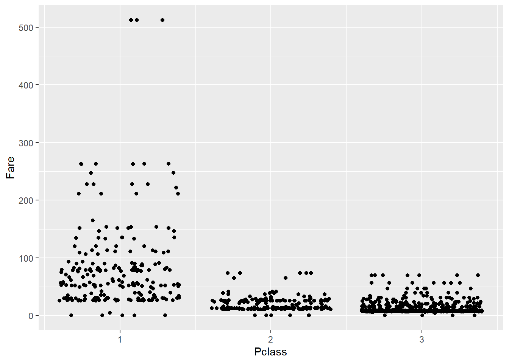
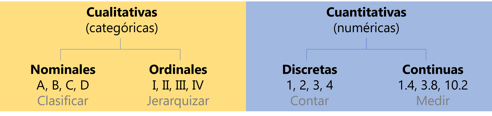

La visualización de datos es una disciplina cuyo fin es mapear datos de forma gráfica para comunicar un mensaje. En investigación se usa principalmente en los análisis exploratorios (durante la fase de entendimiento de los datos) y en la comunicación de los resultados.
{ggplot2} está escrito en R siguiendo la gramática de gráficos (gg). Por ello, al utilizarlo, el usuario tiene que pensar como cuando está haciendo un dibujo a mano y pensar en ir añadiendo diferentes capas a la creación. El flujo de trabajo es crear un gráfico vacío, añadir una capa con los datos, añadir una capa con las etiquetas, etc.
https://www.donnacowan.ca/category/animated-gifs/
Otra característica de {ggplot2} además del trabajo por capas es que precisa de datos ordenados para que se ejecute de forma óptima.
üí°Recordamos que en una tabla de datos ordenados (Tidy Data) cada columna representa una variable, cada fila es una observaci√≥n y cada celda contiene un √∫nico valor.
2 Elementos básicos en un gráfico de {ggplot2}
Se necesitan tres capas básicas para crear un gráfico con {ggplot2}:
Los datos (data).
Las geometrías (geom): definen el tipo de gráfico (de puntos, de barras, etc.).
Los aesthetics: características visuales de las geometrías (p.e. la posición, el color) definidas por las variables (columnas) de nuestros datos.
Las capas se conectan entre sí con el símbolo “+”, que siempre debe ir colocado al final de la línea de código si queremos seguir añadiendo capas al gráfico. Todas las capas que se pueden incluir están recogidas en la guía de {ggplot2} de Posit.
library(tidyverse)
Warning: package 'ggplot2' was built under R version 4.3.3
Warning: package 'tidyr' was built under R version 4.3.3
Warning: package 'readr' was built under R version 4.3.2
Warning: package 'purrr' was built under R version 4.3.2
Warning: package 'dplyr' was built under R version 4.3.2
Warning: package 'stringr' was built under R version 4.3.2
Warning: package 'lubridate' was built under R version 4.3.2
── Attaching core tidyverse packages ──────────────────────── tidyverse 2.0.0 ──
✔ dplyr 1.1.4 ✔ readr 2.1.5
✔ forcats 1.0.0 ✔ stringr 1.5.1
✔ ggplot2 3.5.0 ✔ tibble 3.2.1
✔ lubridate 1.9.3 ✔ tidyr 1.3.1
✔ purrr 1.0.2
── Conflicts ────────────────────────────────────────── tidyverse_conflicts() ──
✖ dplyr::filter() masks stats::filter()
✖ dplyr::lag() masks stats::lag()
ℹ Use the conflicted package (<http://conflicted.r-lib.org/>) to force all conflicts to become errors
PassengerId Survived Pclass
1 1 0 3
2 2 1 1
3 3 1 3
4 4 1 1
5 5 0 3
6 6 0 3
Name Sex Age SibSp Parch
1 Braund, Mr. Owen Harris male 22 1 0
2 Cumings, Mrs. John Bradley (Florence Briggs Thayer) female 38 1 0
3 Heikkinen, Miss. Laina female 26 0 0
4 Futrelle, Mrs. Jacques Heath (Lily May Peel) female 35 1 0
5 Allen, Mr. William Henry male 35 0 0
6 Moran, Mr. James male NA 0 0
Ticket Fare Cabin Embarked
1 A/5 21171 7.2500 S
2 PC 17599 71.2833 C85 C
3 STON/O2. 3101282 7.9250 S
4 113803 53.1000 C123 S
5 373450 8.0500 S
6 330877 8.4583 Q
# PassengerId: Id del pasajero# Survived: 1-si, 0-no# Pclass: clase del pasajero# Name: nombre Name# Sex: sexo# Age: edad# SibSp: numero de hermanos + parejas a bordo# Parch: numero de progenitores + hijos a bordo# Ticket: numero de billete# Fare: tarifa# Cabin: camarote# Embarked: puerta de embarquelibrary(ggplot2)ggplot(data = titanic)
ggplot(data = titanic, aes(x = Age, y = Fare))
ggplot() +geom_point(data = titanic, aes(x = Age, y = Fare)) #Los datos se pueden colocar dentro de la funcion ggplot si se van a usar los mismos en todas las geometrias
Warning: Removed 177 rows containing missing values or values outside the scale range
(`geom_point()`).
ggplot() +geom_jitter(data = titanic, aes(x = Pclass, y = Fare))

# Como guardar plots satisfactoriosplotqmegusta <-ggplot() +geom_point(data = titanic, aes(x = Age, y = Fare))ggsave(filename ="farebyage.jpg", plot = plotqmegusta, width =12, height =9, units ="cm", dpi =300)
Warning: Removed 177 rows containing missing values or values outside the scale range
(`geom_point()`).
Warning: Removed 177 rows containing missing values or values outside the scale range
(`geom_point()`).
üí°Algunas revistas cient√≠ficas dan especificaciones muy detalladas sobre c√≥mo tienen que ser los gráficos (p.e. Science). Cuando no tenemos una referencia clara recomendamos pensar en formato A4 (21 x 29,7 cm) y que todos los elementos visuales del gráfico queden visibles cuando se guarda dentro de estos l√≠mites de tama√±o.
2.0.1 Ejercicio 1
Representa un gráfico para ver la relación entre el sexo de los pasajeros y la clase.
ggplot(data = titanic) +geom_point(aes(x = Age, y = Fare, size = Pclass, shape = Sex, color = Embarked), alpha =0.5)
Warning: Using size for a discrete variable is not advised.
Removed 177 rows containing missing values or values outside the scale range
(`geom_point()`).
3.0.1 Ejercicio 2
¿Cómo modificarías el siguiente código para representar la puerta de embarque con diferentes formas pero los puntos de color rosa?
ggplot(data = titanic) +geom_point(aes(x = Age, y = Fare))
Warning: Removed 177 rows containing missing values or values outside the scale range
(`geom_point()`).
4 Tipos de gráfico (geoms)
El tipo de gráfico que escojamos va a depender del tipo de variable y del mensaje que queramos transmitir (es decir, del propósito).

TBD #ver chuleta de principios para creaci?n de gr?ficos #m?s informaci?n sobre tipos de gr?ficos en Vandemeulebroecke et al. 2019
ggplot(data = titanic) +geom_point(aes(x = Age, y = Fare, color = Sex)) +geom_smooth(aes(x = Age, y = Fare, color = Sex, fill = Sex))
`geom_smooth()` using method = 'loess' and formula = 'y ~ x'
Warning: Removed 177 rows containing non-finite outside the scale range
(`stat_smooth()`).
Warning: Removed 177 rows containing missing values or values outside the scale range
(`geom_point()`).
4.1 Exploración de variables categóricas
4.1.1 Conteo
summary(titanic$Pclass)
Tercera Segunda Primera
491 184 216
ggplot(data = titanic) +geom_bar(aes(x = Pclass))
4.1.2 Proporciones
miplot <-ggplot(data = titanic) +geom_bar(aes(x = Pclass, group =1)) miplot #group = 1 hace que considere toda la variable como un todo
Warning: Removed 177 rows containing missing values or values outside the scale range
(`geom_point()`).
pnum +geom_smooth()
`geom_smooth()` using method = 'loess' and formula = 'y ~ x'
Warning: Removed 177 rows containing non-finite outside the scale range
(`stat_smooth()`).
Removed 177 rows containing missing values or values outside the scale range
(`geom_point()`).
üí°Echar un vistazo al paquete ggdist y los raincloud plots
üí°ggpairs
üí°corrgram
5 {Ggplot2}: funciones avanzadas
#Ver la chuleta
5.1 Etiquetas
pnumcat <-ggplot(data = titanic) +geom_boxplot(aes(x = Pclass, y = Age))pnumcat
Warning: Removed 177 rows containing non-finite outside the scale range
(`stat_boxplot()`).
pnumcat +labs(title ="Edad de los pasajeros según su clase", x ="Clase", y ="Edad (años)") #title, subtitle, x, y, caption
Warning: Removed 177 rows containing non-finite outside the scale range
(`stat_boxplot()`).
5.2 Sistema de coordenadas
pnumcat +coord_cartesian(ylim =c(0, 100))
Warning: Removed 177 rows containing non-finite outside the scale range
(`stat_boxplot()`).
üí°Ojo con xlim
5.2.1 Ejercicio 5
Cambia la posición de los ejes X e Y en el sistema de coordenadas de pnumcat
5.3 Faceting
Los “facets” dividen el gráfico en subgráficos basados en el valor de una o varias variables categóricas. Las facetas son muy útiles en exploración de datos.
miplot2 <-ggplot(data = titanic, aes(x = Age, y = Fare, color = Sex)) +geom_point()miplot2
Warning: Removed 177 rows containing missing values or values outside the scale range
(`geom_point()`).
Hay dos funciones para facetar: facet_grid() y facet_wrap().
Warning: Removed 177 rows containing missing values or values outside the scale range
(`geom_point()`).
5.4 Posición
¿Cómo colocar geometrias que de otro modo ocuparían el mismo espacio?
ggplot(data = titanic) +geom_bar(aes(x = Pclass, fill = Sex))
ggplot(data = titanic) +geom_bar(aes(x = Pclass, fill = Sex), position ="dodge") #esquivar
ggplot(data = titanic) +geom_bar(aes(x = Pclass, fill = Sex), position ="fill") #rellenar
5.5 Escalas
Sirven para personalizar los aesthetics. Las funciones de la familia scale siempre tienen la misma estructura: “scale” _ aesthetic que se personaliza _ tipo de escala (p.e. continua, discreta, manual, etc.).
Las paletas de colores tipo manual y gradient se personalizan con el nombre o código del color. Con esta herramienta puedes elegir entre cientos de colores.
Las paletas tipo brewer y distiller utilizan paletas de colores que pueden ser secuenciales, cualitativas o divergentes, que aunque tienen utilidad en gran variedad de situaciones, están diseñadas para trabajar con mapas o a grandes escalas.
Las paletas HCL (hue-chroma-luminance) son paletas muy populares que tienen su propia función (p.e. colores para representar batimetría). De entre ellas, Viridis se he vuelto muy popular porque está diseñada para que personas con distintos tipos de daltonismo puedan distinguir los colores.
RColorBrewer::display.brewer.all()
RColorBrewer::brewer.pal(name ="Set3", n =6) # para crear paleta
hcl.cl> require("graphics")
hcl.cl> # color wheels in RGB/HSV and HCL space
hcl.cl> par(mfrow = c(2, 2))
hcl.cl> pie(rep(1, 12), col = rainbow(12), main = "RGB/HSV")
hcl.cl> pie(rep(1, 12), col = hcl.colors(12, "Set 2"), main = "HCL")
hcl.cl> par(mfrow = c(1, 1))
hcl.cl> ## color swatches for RGB/HSV palettes
hcl.cl> demo.pal <-
hcl.cl+ function(n, border = if (n < 32) "light gray" else NA,
hcl.cl+ main = paste("color palettes; n=", n),
hcl.cl+ ch.col = c("rainbow(n, start=.7, end=.1)", "heat.colors(n)",
hcl.cl+ "terrain.colors(n)", "topo.colors(n)",
hcl.cl+ "cm.colors(n)"))
hcl.cl+ {
hcl.cl+ nt <- length(ch.col)
hcl.cl+ i <- 1:n; j <- n / nt; d <- j/6; dy <- 2*d
hcl.cl+ plot(i, i+d, type = "n", yaxt = "n", ylab = "", main = main)
hcl.cl+ for (k in 1:nt) {
hcl.cl+ rect(i-.5, (k-1)*j+ dy, i+.4, k*j,
hcl.cl+ col = eval(str2lang(ch.col[k])), border = border)
hcl.cl+ text(2*j, k * j + dy/4, ch.col[k])
hcl.cl+ }
hcl.cl+ }
hcl.cl> demo.pal(16)
# Viridis ggplot(data = titanic, aes(x = Age, y = Fare, color = Age)) +geom_point() +scale_color_gradientn(colours =hcl.colors(12, "viridis"))
Warning: Removed 177 rows containing missing values or values outside the scale range
(`geom_point()`).
ggplot(data = titanic, aes(x = Age, y = Fare, color = Age)) +geom_point() +scale_color_viridis_c()
Warning: Removed 177 rows containing missing values or values outside the scale range
(`geom_point()`).
üí°Aqu√≠ puedes encontrar más informaci√≥n sobre c√≥mo utilizar colores en {ggplot2}.
5.7 Temas
theme() permite la personalización completa de todos los elementos del gráfico. Los argumentos dentro de la función definen la parte del gráfico a cambiar. Se les asigna una función de cambio según el elemento a cambiar dentro de esa parte (parte.del.gráfico = elemento_a_cambiar(…)): line, rect, text.
?theme
starting httpd help server ... done
miplot2 +theme(axis.title.x =element_text(color ="red", face ="bold"))
Warning: Removed 177 rows containing missing values or values outside the scale range
(`geom_point()`).
5.7.1 Ejercicio 7
Dibuja una linea negra que represente los ejes de miplot y quita el fondo del gráfico.
Existen temas configurados por defecto y un asistente que te ayuda a personalizar el gráfico.
miplot2 +theme_classic()
Warning: Removed 177 rows containing missing values or values outside the scale range
(`geom_point()`).
miplot2 +theme_light()
Warning: Removed 177 rows containing missing values or values outside the scale range
(`geom_point()`).
miplot2 +theme_void()
Warning: Removed 177 rows containing missing values or values outside the scale range
(`geom_point()`).
Warning: package 'terra' was built under R version 4.3.3
terra 1.7.71
Attaching package: 'terra'
The following object is masked from 'package:patchwork':
area
The following object is masked from 'package:tidyr':
extract
library(easyclimate) # Obtenemos datos de temperatura máxima para el 31 de diciembre de 2020 en una zona de España raster <-get_daily_climate(coords =vect("POLYGON ((-4.5 41, -4.5 40.5, -5 40.5, -5 41))"), period ="2020-12-31", climatic_var ="Tmax", output ="raster")
Connecting to the server...
Downloading Tmax data... This process might take several minutes
rastermap <-ggplot(data = tidy_raster) +geom_raster(aes(x = x, y = y, fill =`2020-12-31`), interpolate =TRUE) rastermaprastermap +scale_fill_viridis_c(name ="Temperatura\nmáxima (ºC)\n31 Dic. 2020") +labs(y ="Latitude", x ="Longitude") +theme_bw()
7.2 Vectorial
En general, se recomienda usar geom_sf(). Cuando el mapa contiene puntos es sencillo transformarlo en formato ordenado con terra::as.data.frame() y tratarlo con geom_point(). Para líneas y polígonos es mas dificil, pero se puede como veremos en el ejemplo debajo.
vecmap <-ggplot(data = vectorial) +geom_sf(aes(fill = NAME_2), color ="white")vecmap
vecmap +coord_sf() +scale_fill_brewer(palette ="Set3", name ="Cantones de\nLuxemburgo") +labs(y ="Latitude", x ="Longitude") +theme_bw()
vectorial_df <- vect_terra %>%geom() %>% terra::as.data.frame()ggplot(data = vectorial_df) +geom_polygon(aes(x = x, y = y, group = geom, fill =as.factor(geom)), color ="white") +scale_fill_brewer(palette ="Set3", name ="Cantones de\nLuxemburgo") +labs(y ="Latitude", x ="Longitude") +theme_bw()